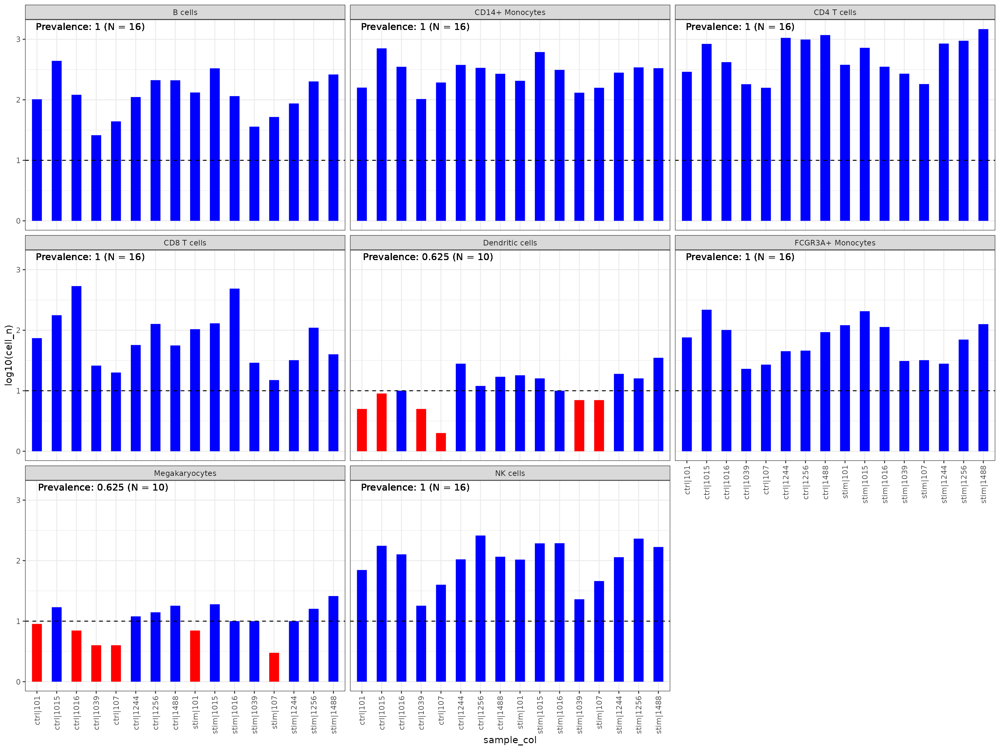
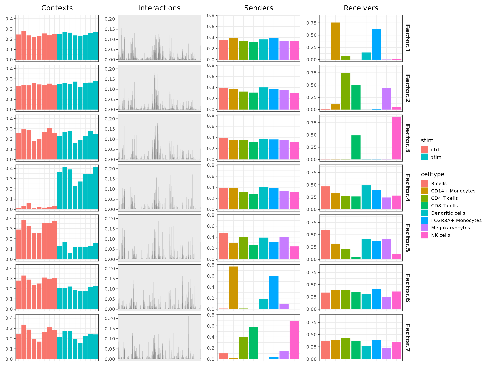
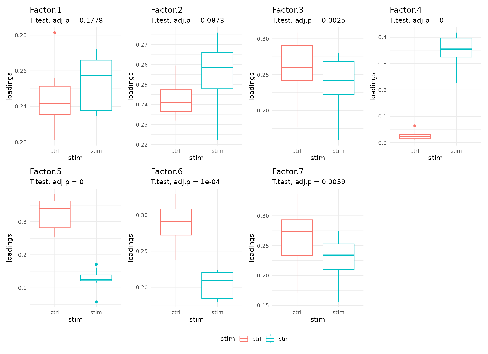
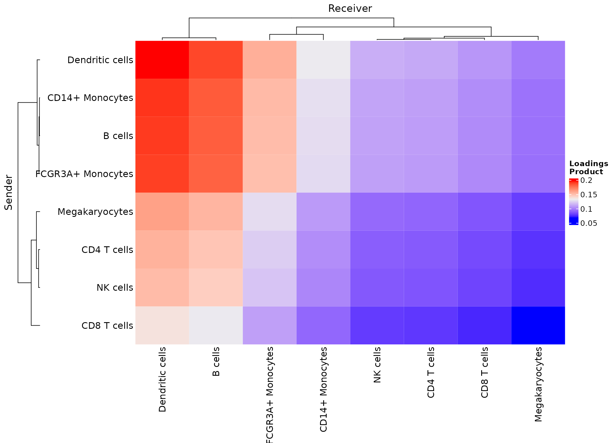
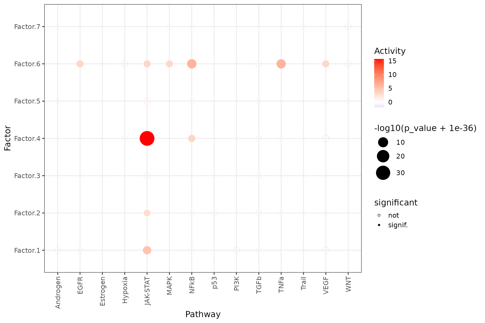
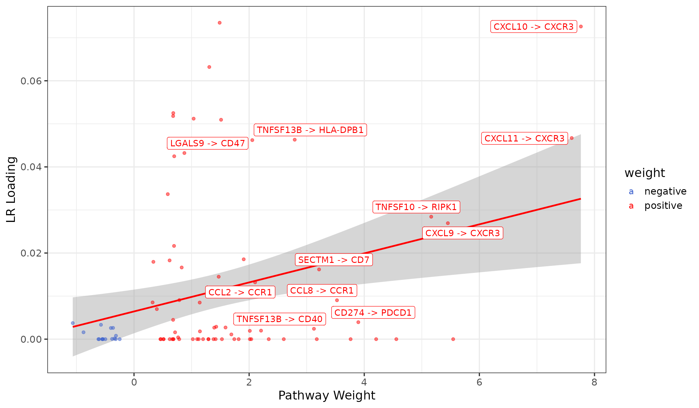

Context Factorisation with tensor-cell2cell
Daniel Dimitrov
Saezlab, Heidelberg Universitydaniel.dimitrov@uni-heidelberg.de
2022-11-18
Source:vignettes/liana_cc2tensor.Rmd
liana_cc2tensor.RmdIntroduction
Tensor decomposition as proposed in the tensor_cell2cell paper, enables us to decipher context-driven intercellular communication by simultaneously accounting for an unlimited number of “contexts”. These contexts could represent samples coming from longtidinal sampling points, multiple conditions, or cellular niches.
The power of tensor-cell2cell is in its ability to decompose latent patterns of intercellular communication in an untargeted manner, in theory being able to handle cell-cell communication results coming from any experimental design, regardless of its complexity.
Simply put, tensor_cell2cell uses LIANA’s output by sample to build a 4D tensor, represented by 1) contexts, 2) interactions, 3) sender, and 4) receiver cell types. This tensor is then decomposed into a set of factors, which can be interpreted as low dimensionality latent variables (vectors) that capture the CCC patterns across contexts.
Here, we will combine LIANA with tensor_cell2cell to decipher potential ligand-receptor interaction changes. As a simple example, we will look at ~14000 PBMCs from 8 donors, each before and after IFN-beta stimulation (GSE96583; obtained via ExperimentHub & muscData). Note that by focusing on PBMCs, for the purpose of this tutorial, we assume that coordinated events occur among them.
This tutorial was heavily influenced by the tutorials of tensor_cell2cell.
Any usage of liana x tensor_cell2cell should logically cite both articles, and in particular tensor_cell2cell (see reference at the bottom).
Load required libraries
library(tidyverse, quietly = TRUE)
library(SingleCellExperiment, quietly = TRUE)
library(reticulate, quietly = TRUE)
library(magrittr, quietly = TRUE)
library(liana, quietly = TRUE)
library(ExperimentHub, quietly = TRUE)Request Data and Preprocess
Request Data
eh <- ExperimentHub()
# Get Data
(sce <- eh[["EH2259"]])## class: SingleCellExperiment
## dim: 35635 29065
## metadata(0):
## assays(1): counts
## rownames(35635): MIR1302-10 FAM138A ... MT-ND6 MT-CYB
## rowData names(2): ENSEMBL SYMBOL
## colnames(29065): AAACATACAATGCC-1 AAACATACATTTCC-1 ... TTTGCATGGTTTGG-1
## TTTGCATGTCTTAC-1
## colData names(5): ind stim cluster cell multiplets
## reducedDimNames(1): TSNE
## mainExpName: NULL
## altExpNames(0):Preprocess
# basic feature filtering
sce <- sce[rowSums(counts(sce) >= 1) >= 5, ]
# basic outlier filtering
qc <- scater::perCellQCMetrics(sce)
# remove cells with few or many detected genes
ol <- scater::isOutlier(metric = qc$detected, nmads = 2, log = TRUE)
sce <- sce[, !ol]
# Remove doublets
sce <- sce[, sce$multiplets=="singlet"]
# Set rownames to symbols
rownames(sce) <- rowData(sce)$SYMBOL
# log-transform
sce <- scuttle::logNormCounts(sce)
# Create a label unique for every sample
sce$context <- paste(sce$stim, sce$ind, sep="|")Ensure Consitency across Cell identities
To obtain consistent CCC patterns across samples, we need to make sure that the cell identities are stable. Namely,
# Plot
sce %>%
get_abundance_summary(sample_col = "context",
idents_col = "cell",
min_cells = 10, # min cells per sample
min_samples = 3, # min samples
min_prop = 0.2 # min prop of samples
) %>%
plot_abundance_summary()
# filter non abundant celltypes
sce <- liana::filter_nonabundant_celltypes(sce,
sample_col = "context",
idents_col = "cell")Run liana for on each individual sample.
In order to construct the tensor, we first need to obtain CCC predictions for each sample. In this case, we use SingleCellSignalR scores, as they are regularized, and theory directly comparable between any dataset. One can use any method with non-negative scores from LIANA /w cell2cell_tensor as they were previously shown to yield consistent results (Armingol & Baghdassarian, 2022).
Note that liana_bysample works with SingleCellExperiment alone, if you wish to use Seurat, please use the as.SingleCellExperiment function.
# Run LIANA by sample
sce <- liana_bysample(sce = sce,
sample_col = "context",
idents_col = "cell",
method = "sca", # we use SingleCellSignalR's score alone
expr_prop = 0, # expression proportion threshold
inplace=TRUE # saves to sce
)We expect to see a successful LIANA run for each sample/context.
summary(sce@metadata$liana_res)## Length Class Mode
## ctrl|101 12 tbl_df list
## ctrl|1015 12 tbl_df list
## ctrl|1016 12 tbl_df list
## ctrl|1039 12 tbl_df list
## ctrl|107 12 tbl_df list
## ctrl|1244 12 tbl_df list
## ctrl|1256 12 tbl_df list
## ctrl|1488 12 tbl_df list
## stim|101 12 tbl_df list
## stim|1015 12 tbl_df list
## stim|1016 12 tbl_df list
## stim|1039 12 tbl_df list
## stim|107 12 tbl_df list
## stim|1244 12 tbl_df list
## stim|1256 12 tbl_df list
## stim|1488 12 tbl_df listCell-cell Communication Tensor Decomposition
Here, we call tensor_cell2cell.
This function will first format the ligand-receptor scores per sample into a 4 Dimensional tensor.
It will then estimate the number of factors to which the tensor will be decomposed (set rank to NULL, for the sake of computational speed, I have pre-calculated the rank and I explicitly set it to 7 here). Optimal rank estimation can be computationally demanding, thus in this case the number ranks was pre-determined.
One can think of this as a higher-order non-negative matrix factorization where the factors can be used to reconstruct the tensor. We refer the user to the publication of tensor-cell2cell for further information.
Note that by default LIANA will set up a conda environment with basilisk (if conda_env is NULL), the user can alternatively specify the name of a conda_env with cell2cell to be called via reticulate.
sce <- liana_tensor_c2c(sce = sce,
score_col = 'LRscore',
rank = 7, # set to None to estimate!
how='outer' # defines how the tensor is built
)## Setting up Conda Environment with Basilisk## + '/home/runner/.cache/R/basilisk/1.11.2/0/bin/conda' 'create' '--yes' '--prefix' '/home/runner/.cache/R/basilisk/1.11.2/liana/0.1.8/liana_cell2cell' 'python=3.8.8' '--quiet' '-c' 'conda-forge'## + '/home/runner/.cache/R/basilisk/1.11.2/0/bin/conda' 'install' '--yes' '--prefix' '/home/runner/.cache/R/basilisk/1.11.2/liana/0.1.8/liana_cell2cell' 'python=3.8.8'## + '/home/runner/.cache/R/basilisk/1.11.2/0/bin/conda' 'install' '--yes' '--prefix' '/home/runner/.cache/R/basilisk/1.11.2/liana/0.1.8/liana_cell2cell' '-c' 'conda-forge' 'python=3.8.8' 'python=3.8.8' 'pandas=1.4.2' 'rpy2=3.4.5'## Building the tensor...## Decomposing the tensor...The how parameter plays is essential in how we treat missing cell types and interactions. In this scenario, we use outer, which will only decompose CCC across any cell identities and interactions in the dataset. Alternatively, one could change it to ‘inner’ then CCC paterns will be decomposed patterns across cell identities & interactions shared between all samples/contexts.
cell2cell_tensor also accepts additional parameters to further tune tensor decomposition, but these are out of scope for this tutorial. Stay tuned for a set of tutorials with comprehensive application of liana with tensor!
Results Overview
Upon a seccusseful run cell2cell_tensor will decompose the tensor into a set of factors, or four vectors corresponding to the initial dimensions of the tensor.
-
contexts- the factor scores assigned to each sample/context -
interactions- the interaction loadings per factor -
senders- loadings for sender/source cell identities -
receivers- loadings for receivers/target cell identities
# get the factors
factors <- get_c2c_factors(sce)
# show them
glimpse(factors)## List of 4
## $ contexts : tibble [16 × 8] (S3: tbl_df/tbl/data.frame)
## ..$ context : Factor w/ 16 levels "ctrl|101","ctrl|1015",..: 1 2 3 4 5 6 7 8 9 10 ...
## ..$ Factor.1: num [1:16] 0.246 0.281 0.237 0.221 0.232 ...
## ..$ Factor.2: num [1:16] 0.232 0.241 0.236 0.26 0.245 ...
## ..$ Factor.3: num [1:16] 0.255 0.294 0.29 0.178 0.202 ...
## ..$ Factor.4: num [1:16] 0.01122 0.03064 0.06389 0.00963 0.0202 ...
## ..$ Factor.5: num [1:16] 0.29 0.383 0.325 0.255 0.255 ...
## ..$ Factor.6: num [1:16] 0.28 0.329 0.289 0.238 0.251 ...
## ..$ Factor.7: num [1:16] 0.246 0.336 0.288 0.197 0.171 ...
## ..- attr(*, "pandas.index")=Index(['ctrl|101', 'ctrl|1015', 'ctrl|1016', 'ctrl|1039', 'ctrl|107',
## 'ctrl|1244', 'ctrl|1256', 'ctrl|1488', 'stim|101', 'stim|1015',
## 'stim|1016', 'stim|1039', 'stim|107', 'stim|1244', 'stim|1256',
## 'stim|1488'],
## dtype='object')
## $ interactions: tibble [1,599 × 8] (S3: tbl_df/tbl/data.frame)
## ..$ lr : Factor w/ 1599 levels "A2M^LRP1","ACTR2^ADRB2",..: 1 2 3 4 5 6 7 8 9 10 ...
## ..$ Factor.1: num [1:1599] 5.68e-03 9.65e-03 2.61e-02 8.13e-31 3.19e-02 ...
## ..$ Factor.2: num [1:1599] 1.66e-08 8.15e-03 2.86e-02 9.22e-02 3.69e-20 ...
## ..$ Factor.3: num [1:1599] 7.80e-05 5.51e-02 7.81e-16 1.41e-02 1.11e-39 ...
## ..$ Factor.4: num [1:1599] 3.39e-09 5.40e-02 2.34e-02 1.31e-03 2.14e-02 ...
## ..$ Factor.5: num [1:1599] 1.87e-03 2.69e-02 1.38e-06 5.99e-13 1.98e-06 ...
## ..$ Factor.6: num [1:1599] 1.34e-09 3.12e-02 2.82e-03 1.24e-02 6.31e-08 ...
## ..$ Factor.7: num [1:1599] 1.98e-11 4.17e-02 5.93e-03 3.53e-03 4.57e-03 ...
## ..- attr(*, "pandas.index")=Index(['A2M^LRP1', 'ACTR2^ADRB2', 'ACTR2^LDLR', 'ADAM10^AXL', 'ADAM10^CADM1',
## 'ADAM10^CD44', 'ADAM10^GPNMB', 'ADAM10^IL6R', 'ADAM10^MET',
## 'ADAM10^NOTCH1',
## ...
## 'WNT7A^FZD9_LRP6', 'WNT7A^LDLR', 'WNT7A^RECK', 'YBX1^NOTCH1',
## 'ZG16B^CXCR4', 'ZG16B^TLR2', 'ZG16B^TLR4', 'ZG16B^TLR5', 'ZG16B^TLR6',
## 'ZP3^MERTK'],
## dtype='object', length=1599)
## $ senders : tibble [8 × 8] (S3: tbl_df/tbl/data.frame)
## ..$ celltype: Factor w/ 8 levels "B cells","CD14+ Monocytes",..: 1 2 3 4 5 6 7 8
## ..$ Factor.1: num [1:8] 0.356 0.392 0.333 0.323 0.365 ...
## ..$ Factor.2: num [1:8] 0.394 0.367 0.325 0.307 0.4 ...
## ..$ Factor.3: num [1:8] 0.389 0.354 0.358 0.318 0.369 ...
## ..$ Factor.4: num [1:8] 0.39 0.392 0.316 0.28 0.403 ...
## ..$ Factor.5: num [1:8] 0.47 0.291 0.399 0.26 0.392 ...
## ..$ Factor.6: num [1:8] 1.18e-02 7.72e-01 1.21e-02 2.32e-06 1.80e-01 ...
## ..$ Factor.7: num [1:8] 0.10381 0.02506 0.4003 0.58482 0.00678 ...
## ..- attr(*, "pandas.index")=Index(['B cells', 'CD14+ Monocytes', 'CD4 T cells', 'CD8 T cells',
## 'Dendritic cells', 'FCGR3A+ Monocytes', 'Megakaryocytes', 'NK cells'],
## dtype='object')
## $ receivers : tibble [8 × 8] (S3: tbl_df/tbl/data.frame)
## ..$ celltype: Factor w/ 8 levels "B cells","CD14+ Monocytes",..: 1 2 3 4 5 6 7 8
## ..$ Factor.1: num [1:8] 2.22e-06 7.58e-01 7.14e-02 8.84e-05 1.46e-01 ...
## ..$ Factor.2: num [1:8] 0.00846 0.1065 0.74094 0.49777 0.00018 ...
## ..$ Factor.3: num [1:8] 0.00863 0.01187 0.01306 0.49121 0.00252 ...
## ..$ Factor.4: num [1:8] 0.468 0.327 0.277 0.263 0.49 ...
## ..$ Factor.5: num [1:8] 0.5992 0.3197 0.2067 0.0412 0.4111 ...
## ..$ Factor.6: num [1:8] 0.339 0.389 0.393 0.351 0.314 ...
## ..$ Factor.7: num [1:8] 0.363 0.388 0.435 0.364 0.272 ...
## ..- attr(*, "pandas.index")=Index(['B cells', 'CD14+ Monocytes', 'CD4 T cells', 'CD8 T cells',
## 'Dendritic cells', 'FCGR3A+ Monocytes', 'Megakaryocytes', 'NK cells'],
## dtype='object')Here, we examine the behavior of the different dimensions across the factors. When we look at the contexts (samples) loadings Factor.4 seems to be notably different between the groups. We also see that the loadings for the “Sender” and “Receiver” cells have a relatively uniform distribution, suggesting that most cell types are involved in the CCC events that distinguish the conditions.
# Plot overview
plot_c2c_overview(sce, group_col="stim")
Statistical comparison of Communication Patterns
Here, we see that the communication patterns (or context loadings) identified statistically significant patterns before and after stimulation.
These factors thus represent differences in the ligand-receptor interactions as well as cell types participating in cell-cell communication before and after IFN-beta stimulation.
# Get all boxplots
all_facts_boxes <- plot_context_boxplot(sce,
group_col = "stim",
test="t.test", # applicable only to two groups
paired=TRUE #! Is this the case for your data?
)
# Combine all boxplots
require(patchwork)
wrap_plots(
all_facts_boxes,
ncol=4) +
plot_layout(guides = "collect") & theme(legend.position = 'bottom') +
theme(plot.tag = element_text(face = 'bold', size = 16)
)
Contexts Heatmap
Again, we see a clear seperation between STIM and CTRL, further suggesting the relevance of the changes in the inferred interactions.
plot_context_heat(sce, group_col = "stim")Cell-cell pairs with high potential of interaction
Here we use the product of the source and target loadings to generate the heatmap of potential celltype-celltype pair relationships, which contribute to Factor.4.
plot_c2c_cells(sce,
factor_of_int = "Factor.4",
name = "Loadings \nProduct")
Gini Coefficients of Factor-specific Communicating Sender and Receiver cell types
Gini coefficients range from 0 to 1, and are measures of dispersion, typically used to measure inequality.
Here, the Gini coefficient is used to measure the imbalance of communication in terms of the cell types.
Gini coefficient of 1 would suggests that there is a single cell type contributing to the communication patterns within a factor, while a value of 0 suggest perfect equality between the cell type.
When we focus on Factor.4, we see that the both source/sender and target/receiver cell types have nearly uniform contributions.
# Get loadings for source/sender Cell types
calculate_gini(factors$senders)## # A tibble: 7 × 2
## factor gini
## <chr> <dbl>
## 1 Factor.1 0.0446
## 2 Factor.2 0.0674
## 3 Factor.3 0.0390
## 4 Factor.4 0.0790
## 5 Factor.5 0.145
## 6 Factor.6 0.765
## 7 Factor.7 0.625
# Get loadings for target/receiver Cell types
calculate_gini(factors$receivers)## # A tibble: 7 × 2
## factor gini
## <chr> <dbl>
## 1 Factor.1 0.793
## 2 Factor.2 0.699
## 3 Factor.3 0.869
## 4 Factor.4 0.164
## 5 Factor.5 0.350
## 6 Factor.6 0.0833
## 7 Factor.7 0.109LR loadings Heatmap
We can see the LRs involved across contexts.
Though, perhaps since in this case Factors 4 and 5 are those associated with the stimulation, perhaps it’s best to focus on those.
plot_lr_heatmap(sce, n = 5, cluster_columns=FALSE)
LR loadings Pathway Enrichment
Here, we will use pathways from PROGENy, together with decoupleR, to do an enrichment analysis on the LR loadings.
PROGENy represent a data-driven signatures for 14 pathways, while decoupleR is an framework with multiple enrichment methods.
Since PROGENy was originally intended to be used with genes, we need to reformat it to match ligand-receptor predictions. Namely, generate_lr_geneset will assign a LR to a specific pathway, only if both the ligand and receptor, as well as all their subunits, are associated with the same pathway. And also in the case of weighted gene sets (like progeny), all entities have the same weight sign.
# obtain progeny gene sets
progeny <- decoupleR::get_progeny(organism = 'human', top=5000) %>%
select(-p_value)
# convert to LR sets
progeny_lr <- generate_lr_geneset(factors$interactions,
resource = progeny)
progeny_lr## # A tibble: 941 × 3
## lr set mor
## <chr> <chr> <dbl>
## 1 ACTR2^LDLR EGFR 1.13
## 2 ADAM10^CADM1 MAPK -1.04
## 3 ADAM10^GPNMB EGFR -1.99
## 4 ADAM10^GPNMB MAPK -2.79
## 5 ADAM10^NOTCH1 EGFR -0.925
## 6 ADAM10^NOTCH1 MAPK -0.925
## 7 ADAM10^NOTCH2 TGFb 1.25
## 8 ADAM10^TSPAN15 MAPK -0.925
## 9 ADAM12^ITGB1 Androgen -0.677
## 10 ADAM12^ITGB1 TGFb 2.15
## # … with 931 more rowsEnrichment Dotplot
Here, we see that LRs associated with the JAK-STAT gene in progeny are enriched in Factor.4.
# interaction loadings to matrix
mat <- factors$interactions %>%
column_to_rownames("lr") %>%
as.matrix()
# run enrichment analysis with decoupler
# (we fit a univariate linear model for each gene set)
# We don't consider genesets with minsize < 10
res <- decoupleR::run_ulm(mat = mat,
network = progeny_lr,
.source = "set",
.target = "lr",
minsize=10) %>%
mutate(p_adj = p.adjust(p_value, method = "fdr"))
res %>% # sig/isnig flag
mutate(significant = if_else(p_adj <= 0.05, "signif.", "not")) %>%
ggplot(aes(x=source, y=condition, shape=significant,
colour=score, size=-log10(p_value+1e-36))) +
geom_point() +
scale_colour_gradient2(high = "red", low="blue") +
scale_size_continuous(range = c(3, 12)) +
scale_shape_manual(values=c(21, 16)) +
theme_bw(base_size = 15) +
theme(axis.text.x = element_text(angle = 90, vjust = 0.5, hjust=1)) +
labs(x="Pathway",
y="Factor",
colour="Activity"
)
LRs driving enrichment of JAK-STAT in Factor.4
# Plot LRs associated with Estrogen
lrs <- factors$interactions %>%
left_join(progeny_lr, by="lr") %>%
filter(set=="JAK-STAT") %>%
select(lr, set, mor, loading = Factor.3) %>%
mutate(lr = gsub(as.character(str_glue("\\^")), " -> ", lr)) %>%
mutate(weight = if_else(mor >= 0, "positive", "negative"))
lrs %>%
# only label those that are > x
mutate(lr = if_else(loading>=0.001 & abs(mor) > 2, lr, "")) %>%
ggplot(aes(x=mor, y=loading, colour=weight)) +
# label only top 20
stat_smooth(method = "lm", col = "red") +
geom_point(alpha = 0.5) +
ggrepel::geom_label_repel(aes(label = lr)) +
theme_bw(base_size = 15) +
scale_colour_manual(values = c("royalblue3", "red")) +
labs(x="Pathway Weight", y="LR Loading")
Citation
To Cite tensor_cell2cell: Armingol, E., Baghdassarian, H.M., Martino, C., Perez-Lopez, A., Aamodt, C., Knight, R. and Lewis, N.E., 2022. Context-aware deconvolution of cell–cell communication with Tensor-cell2cell. Nature Communications, 13(1), pp.1-15.
To Cite LIANA:
## Warning in person1(given = given[[i]], family = family[[i]], middle =
## middle[[i]], : It is recommended to use 'given' instead of 'middle'.
## Warning in person1(given = given[[i]], family = family[[i]], middle =
## middle[[i]], : It is recommended to use 'given' instead of 'middle'.
## Warning in person1(given = given[[i]], family = family[[i]], middle =
## middle[[i]], : It is recommended to use 'given' instead of 'middle'.
## Warning in person1(given = given[[i]], family = family[[i]], middle =
## middle[[i]], : It is recommended to use 'given' instead of 'middle'.##
## To cite liana in publications use:
##
## Dimitrov, D., Türei, D., Garrido-Rodriguez M., Burmedi P.L., Nagai,
## J.S., Boys, C., Flores, R.O.R., Kim, H., Szalai, B., Costa, I.G.,
## Valdeolivas, A., Dugourd, A. and Saez-Rodriguez, J. Comparison of
## methods and resources for cell-cell communication inference from
## single-cell RNA-Seq data. Nat Commun 13, 3224 (2022).
##
## A BibTeX entry for LaTeX users is
##
## @Article{,
## author = {Daniel Dimitrov and Denes Turei and Martin Garrido-Rodriguez and Paul Burmedi L. and James Nagai S. and Charlotte Boys and Ricardo Ramirez Flores O. and Hyojin Kim and Bence Szalai and Ivan Costa G. and Alberto Valdeolivas and Aurélien Dugourd and Julio Saez-Rodriguez},
## title = {Comparison of methods and resources for cell-cell communication inference from single-cell RNA-Seq data},
## journal = {Nature Communications},
## year = {2022},
## doi = {10.1038/s41467-022-30755-0},
## encoding = {UTF-8},
## }Session information
## ─ Session info ───────────────────────────────────────────────────────────────────────────────────────────────────────
## setting value
## version R version 4.2.2 (2022-10-31)
## os Ubuntu 20.04.5 LTS
## system x86_64, linux-gnu
## ui X11
## language en
## collate C.UTF-8
## ctype C.UTF-8
## tz UTC
## date 2022-11-18
## pandoc 2.7.3 @ /usr/bin/ (via rmarkdown)
##
## ─ Packages ───────────────────────────────────────────────────────────────────────────────────────────────────────────
## package * version date (UTC) lib source
## AnnotationDbi 1.58.0 2022-04-26 [1] Bioconductor
## AnnotationHub * 3.4.0 2022-04-26 [1] Bioconductor
## assertthat 0.2.1 2019-03-21 [1] RSPM
## backports 1.4.1 2021-12-13 [1] RSPM
## basilisk 1.11.2 2022-11-18 [1] Github (LTLA/basilisk@be72de1)
## basilisk.utils 1.9.4 2022-11-18 [1] Github (LTLA/basilisk.utils@b3ab58d)
## beachmat 2.12.0 2022-04-26 [1] Bioconductor
## beeswarm 0.4.0 2021-06-01 [1] RSPM
## Biobase * 2.56.0 2022-04-26 [1] Bioconductor
## BiocFileCache * 2.4.0 2022-04-26 [1] Bioconductor
## BiocGenerics * 0.42.0 2022-04-26 [1] Bioconductor
## BiocManager 1.30.19 2022-10-25 [1] RSPM
## BiocNeighbors 1.14.0 2022-04-26 [1] Bioconductor
## BiocParallel 1.30.4 2022-10-11 [1] Bioconductor
## BiocSingular 1.12.0 2022-04-26 [1] Bioconductor
## BiocStyle * 2.24.0 2022-04-26 [1] Bioconductor
## BiocVersion 3.15.2 2022-03-29 [1] Bioconductor
## Biostrings 2.64.1 2022-08-18 [1] Bioconductor
## bit 4.0.5 2022-11-15 [1] RSPM
## bit64 4.0.5 2020-08-30 [1] RSPM
## bitops 1.0-7 2021-04-24 [1] RSPM
## blob 1.2.3 2022-04-10 [1] RSPM
## bluster 1.6.0 2022-04-26 [1] Bioconductor
## bookdown 0.30 2022-11-09 [1] RSPM
## broom 1.0.1 2022-08-29 [1] RSPM
## bslib 0.4.1 2022-11-02 [1] RSPM
## cachem 1.0.6 2021-08-19 [1] RSPM
## cellranger 1.1.0 2016-07-27 [1] RSPM
## checkmate 2.1.0 2022-04-21 [1] RSPM
## circlize 0.4.15 2022-05-10 [1] RSPM
## cli 3.4.1 2022-09-23 [1] RSPM
## clue 0.3-62 2022-10-18 [1] RSPM
## cluster 2.1.4 2022-08-22 [2] CRAN (R 4.2.2)
## codetools 0.2-18 2020-11-04 [2] CRAN (R 4.2.2)
## colorspace 2.0-3 2022-02-21 [1] RSPM
## ComplexHeatmap 2.12.1 2022-08-09 [1] Bioconductor
## crayon 1.5.2 2022-09-29 [1] RSPM
## curl 4.3.3 2022-10-06 [1] RSPM
## DBI 1.1.3 2022-06-18 [1] RSPM
## dbplyr * 2.2.1 2022-06-27 [1] RSPM
## decoupleR 2.3.2 2022-11-18 [1] Github (saezlab/decoupleR@56dc1a3)
## DelayedArray 0.22.0 2022-04-26 [1] Bioconductor
## DelayedMatrixStats 1.18.2 2022-10-13 [1] Bioconductor
## desc 1.4.2 2022-09-08 [1] RSPM
## digest 0.6.30 2022-10-18 [1] RSPM
## dir.expiry 1.4.0 2022-04-26 [1] Bioconductor
## doParallel 1.0.17 2022-02-07 [1] RSPM
## dplyr * 1.0.10 2022-09-01 [1] RSPM
## dqrng 0.3.0 2021-05-01 [1] RSPM
## edgeR 3.38.4 2022-08-07 [1] Bioconductor
## ellipsis 0.3.2 2021-04-29 [1] RSPM
## evaluate 0.18 2022-11-07 [1] RSPM
## ExperimentHub * 2.4.0 2022-04-26 [1] Bioconductor
## fansi 1.0.3 2022-03-24 [1] RSPM
## farver 2.1.1 2022-07-06 [1] RSPM
## fastmap 1.1.0 2021-01-25 [1] RSPM
## filelock 1.0.2 2018-10-05 [1] RSPM
## forcats * 0.5.2 2022-08-19 [1] RSPM
## foreach 1.5.2 2022-02-02 [1] RSPM
## fs 1.5.2 2021-12-08 [1] RSPM
## future 1.29.0 2022-11-06 [1] RSPM
## future.apply 1.10.0 2022-11-05 [1] RSPM
## gargle 1.2.1 2022-09-08 [1] RSPM
## generics 0.1.3 2022-07-05 [1] RSPM
## GenomeInfoDb * 1.32.4 2022-09-06 [1] Bioconductor
## GenomeInfoDbData 1.2.8 2022-11-18 [1] Bioconductor
## GenomicRanges * 1.48.0 2022-04-26 [1] Bioconductor
## GetoptLong 1.0.5 2020-12-15 [1] RSPM
## ggbeeswarm 0.6.0 2017-08-07 [1] RSPM
## ggplot2 * 3.4.0 2022-11-04 [1] RSPM
## ggrepel 0.9.2 2022-11-06 [1] RSPM
## GlobalOptions 0.1.2 2020-06-10 [1] RSPM
## globals 0.16.1 2022-08-28 [1] RSPM
## glue 1.6.2 2022-02-24 [1] RSPM
## googledrive 2.0.0 2021-07-08 [1] RSPM
## googlesheets4 1.0.1 2022-08-13 [1] RSPM
## gridExtra 2.3 2017-09-09 [1] RSPM
## gtable 0.3.1 2022-09-01 [1] RSPM
## haven 2.5.1 2022-08-22 [1] RSPM
## here 1.0.1 2020-12-13 [1] RSPM
## highr 0.9 2021-04-16 [1] RSPM
## hms 1.1.2 2022-08-19 [1] RSPM
## htmltools 0.5.3 2022-07-18 [1] RSPM
## httpuv 1.6.6 2022-09-08 [1] RSPM
## httr 1.4.4 2022-08-17 [1] RSPM
## igraph 1.3.5 2022-09-22 [1] RSPM
## interactiveDisplayBase 1.34.0 2022-04-26 [1] Bioconductor
## IRanges * 2.30.1 2022-08-18 [1] Bioconductor
## irlba 2.3.5.1 2022-10-03 [1] RSPM
## iterators 1.0.14 2022-02-05 [1] RSPM
## jquerylib 0.1.4 2021-04-26 [1] RSPM
## jsonlite 1.8.3 2022-10-21 [1] RSPM
## KEGGREST 1.36.3 2022-07-12 [1] Bioconductor
## knitr 1.41 2022-11-18 [1] CRAN (R 4.2.2)
## labeling 0.4.2 2020-10-20 [1] RSPM
## later 1.3.0 2021-08-18 [1] RSPM
## lattice 0.20-45 2021-09-22 [2] CRAN (R 4.2.2)
## liana * 0.1.8 2022-11-18 [1] local
## lifecycle 1.0.3 2022-10-07 [1] RSPM
## limma 3.52.4 2022-09-27 [1] Bioconductor
## listenv 0.8.0 2019-12-05 [1] RSPM
## locfit 1.5-9.6 2022-07-11 [1] RSPM
## logger 0.2.2 2021-10-19 [1] RSPM
## lubridate 1.9.0 2022-11-06 [1] RSPM
## magrittr * 2.0.3 2022-03-30 [1] RSPM
## Matrix 1.5-3 2022-11-11 [1] RSPM
## MatrixGenerics * 1.8.1 2022-06-26 [1] Bioconductor
## matrixStats * 0.63.0 2022-11-18 [1] CRAN (R 4.2.2)
## memoise 2.0.1 2021-11-26 [1] RSPM
## metapod 1.4.0 2022-04-26 [1] Bioconductor
## mgcv 1.8-41 2022-10-21 [2] CRAN (R 4.2.2)
## mime 0.12 2021-09-28 [1] RSPM
## modelr 0.1.10 2022-11-11 [1] RSPM
## munsell 0.5.0 2018-06-12 [1] RSPM
## muscData * 1.10.0 2022-04-28 [1] Bioconductor
## nlme 3.1-160 2022-10-10 [2] CRAN (R 4.2.2)
## OmnipathR 3.5.25 2022-11-18 [1] Github (saezlab/OmnipathR@2a734a1)
## parallelly 1.32.1 2022-07-21 [1] RSPM
## patchwork * 1.1.2 2022-08-19 [1] RSPM
## pillar 1.8.1 2022-08-19 [1] RSPM
## pkgconfig 2.0.3 2019-09-22 [1] RSPM
## pkgdown 2.0.6 2022-07-16 [1] RSPM
## png 0.1-7 2013-12-03 [1] RSPM
## prettyunits 1.1.1 2020-01-24 [1] RSPM
## progress 1.2.2 2019-05-16 [1] RSPM
## progressr 0.11.0 2022-09-02 [1] RSPM
## promises 1.2.0.1 2021-02-11 [1] RSPM
## purrr * 0.3.5 2022-10-06 [1] RSPM
## R6 2.5.1 2021-08-19 [1] RSPM
## ragg 1.2.4 2022-10-24 [1] RSPM
## rappdirs 0.3.3 2021-01-31 [1] RSPM
## RColorBrewer 1.1-3 2022-04-03 [1] RSPM
## Rcpp 1.0.9 2022-07-08 [1] RSPM
## RCurl 1.98-1.9 2022-10-03 [1] RSPM
## readr * 2.1.3 2022-10-01 [1] RSPM
## readxl 1.4.1 2022-08-17 [1] RSPM
## reprex 2.0.2 2022-08-17 [1] RSPM
## reticulate * 1.26 2022-08-31 [1] RSPM
## rjson 0.2.21 2022-01-09 [1] RSPM
## rlang 1.0.6 2022-09-24 [1] RSPM
## rmarkdown 2.18 2022-11-09 [1] RSPM
## rprojroot 2.0.3 2022-04-02 [1] RSPM
## RSQLite 2.2.18 2022-10-04 [1] RSPM
## rsvd 1.0.5 2021-04-16 [1] RSPM
## rvest 1.0.3 2022-08-19 [1] RSPM
## S4Vectors * 0.34.0 2022-04-26 [1] Bioconductor
## sass 0.4.2 2022-07-16 [1] RSPM
## ScaledMatrix 1.4.1 2022-09-11 [1] Bioconductor
## scales 1.2.1 2022-08-20 [1] RSPM
## scater 1.24.0 2022-04-26 [1] Bioconductor
## scran 1.24.1 2022-09-11 [1] Bioconductor
## scuttle 1.6.3 2022-08-23 [1] Bioconductor
## sessioninfo 1.2.2 2021-12-06 [1] RSPM
## SeuratObject 4.1.3 2022-11-07 [1] RSPM
## shape 1.4.6 2021-05-19 [1] RSPM
## shiny 1.7.3 2022-10-25 [1] RSPM
## SingleCellExperiment * 1.18.1 2022-10-02 [1] Bioconductor
## sp 1.5-1 2022-11-07 [1] RSPM
## sparseMatrixStats 1.8.0 2022-04-26 [1] Bioconductor
## statmod 1.4.37 2022-08-12 [1] RSPM
## stringi 1.7.8 2022-07-11 [1] RSPM
## stringr * 1.4.1 2022-08-20 [1] RSPM
## SummarizedExperiment * 1.26.1 2022-04-29 [1] Bioconductor
## systemfonts 1.0.4 2022-02-11 [1] RSPM
## textshaping 0.3.6 2021-10-13 [1] RSPM
## tibble * 3.1.8 2022-07-22 [1] RSPM
## tidyr * 1.2.1 2022-09-08 [1] RSPM
## tidyselect 1.2.0 2022-10-10 [1] RSPM
## tidyverse * 1.3.2 2022-07-18 [1] RSPM
## timechange 0.1.1 2022-11-04 [1] RSPM
## tzdb 0.3.0 2022-03-28 [1] RSPM
## utf8 1.2.2 2021-07-24 [1] RSPM
## vctrs 0.5.1 2022-11-16 [1] RSPM
## vipor 0.4.5 2017-03-22 [1] RSPM
## viridis 0.6.2 2021-10-13 [1] RSPM
## viridisLite 0.4.1 2022-08-22 [1] RSPM
## vroom 1.6.0 2022-09-30 [1] RSPM
## withr 2.5.0 2022-03-03 [1] RSPM
## xfun 0.35 2022-11-16 [1] RSPM
## xml2 1.3.3 2021-11-30 [1] RSPM
## xtable 1.8-4 2019-04-21 [1] RSPM
## XVector 0.36.0 2022-04-26 [1] Bioconductor
## yaml 2.3.6 2022-10-18 [1] RSPM
## zlibbioc 1.42.0 2022-04-26 [1] Bioconductor
##
## [1] /home/runner/work/_temp/Library
## [2] /opt/R/4.2.2/lib/R/library
##
## ─ Python configuration ───────────────────────────────────────────────────────────────────────────────────────────────
## python: /home/runner/.cache/R/basilisk/1.11.2/liana/0.1.8/liana_cell2cell/bin/python
## libpython: /home/runner/.cache/R/basilisk/1.11.2/liana/0.1.8/liana_cell2cell/lib/libpython3.8.so
## pythonhome: /home/runner/.cache/R/basilisk/1.11.2/liana/0.1.8/liana_cell2cell:/home/runner/.cache/R/basilisk/1.11.2/liana/0.1.8/liana_cell2cell
## version: 3.8.8 | packaged by conda-forge | (default, Feb 20 2021, 16:22:27) [GCC 9.3.0]
## numpy: /home/runner/.cache/R/basilisk/1.11.2/liana/0.1.8/liana_cell2cell/lib/python3.8/site-packages/numpy
## numpy_version: 1.23.4
##
## NOTE: Python version was forced by use_python function
##
## ──────────────────────────────────────────────────────────────────────────────────────────────────────────────────────